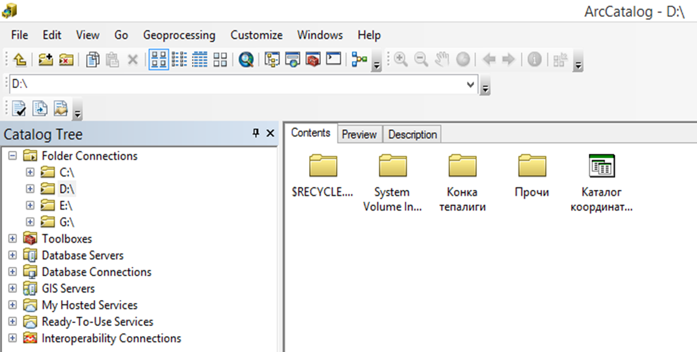
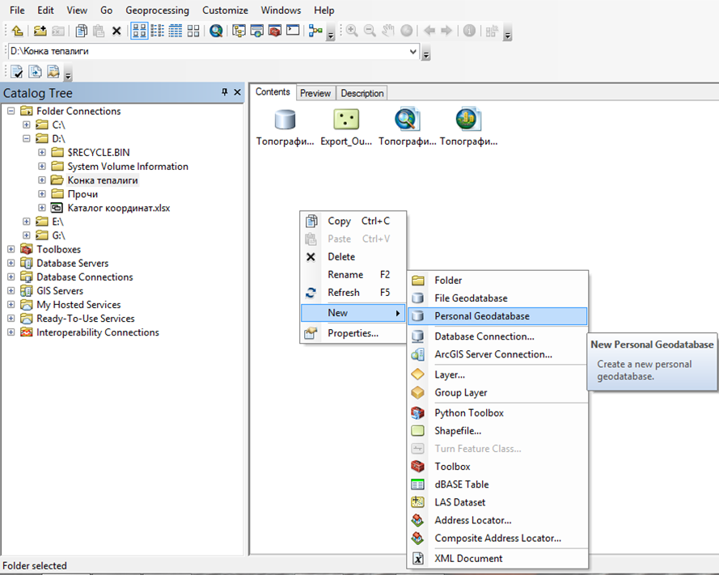
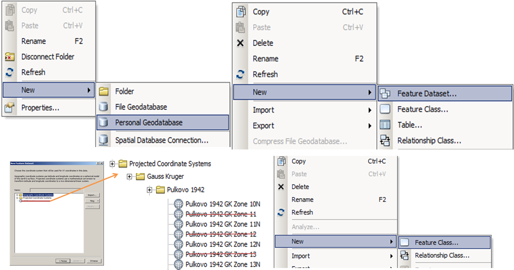
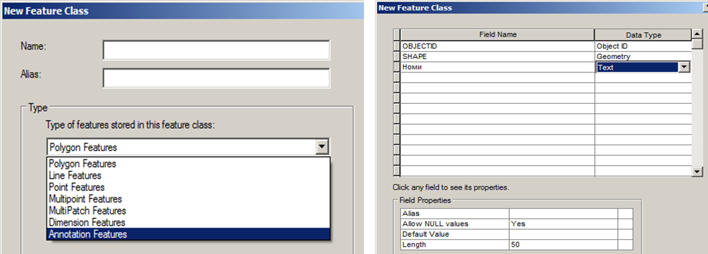
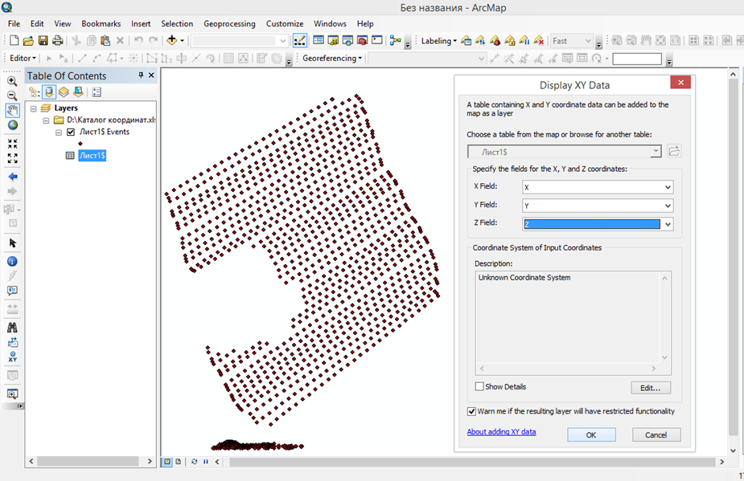
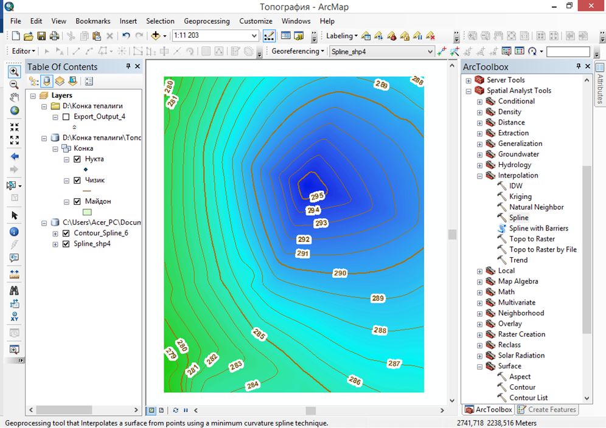
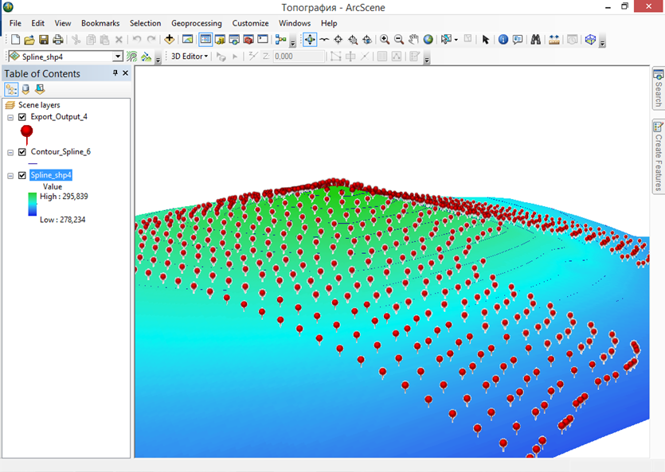

Мавзу: ArcGIS дастурида геодезик қийматларни қайта ишлаб уч ўлчамли моделларни қуриш.
Reja.
1. Zamonaviy dasturlar va geoaxborot tizimlari
2. ArcGIS dasturi va uning ilovalari
3 Geodezik qiymatlarni qayta ishlab uch o`lchamli model qurish
Hozirgi davrda maʼlumotlarni qayta ishlash bilan bog‘liq masalalar har bir soha faoliyatida
keng tarqalgan. Har qanday korxona yoki tashkilotni avtomatlashtirilgan maʼlumotlar
tizimisiz tasavvur qilish qiyin. Barcha avtomatlashtirilgan maʼlumotlar tizimlari
maʼlumotlar bazasini boshqarish tizimiga (MBBT) asoslanadi. Geomaʼlumotlar bazasi MBBT
negizida shakllantiriladi. Fan geomaʼlumotlar bazasini yaratish va boshqarishning nazariy
asoslarini va amaliy uslublarini o‘rganadi. Maʼlumotlar bazasi va geomaʼlumotlar bazasining
asosiy tushunchalari hamda ular orasidagi bog‘liqlik, sinflarga ajratish, maʼlumotlar
strukturasini shakllantirish va shunga mos MBBT turlarini ko‘rib chiqadi. Bugungi kunda har
qanday GAT (geografik axborot tizimi) loyihalarini geomaʼlumotlar bazasisiz tasavvur etish
qiyin, shunday ekan, bu sohada taʼlim oladigan talabalar ushbu fandan zaruriy bilimlarni
berish ularning yuqori malakali mutaxassis bo‘lib yetishishlarida muhim o‘rin egallaydi.
Bugungi kunda geodeziya iqtisodiyot tarmoqlarining barcha sohalarida keng
qo‘llanilmoqda. Shu bois GAT va geodeziyani birgalikda qo`llash uchun katta hajmdagi yozma
va grafikaviy, hudud bilan bog‘langan geografik ma’lumotlarni to‘plash kerak bo‘ladi.
Geoma’lumotlar bazalari esa maxsus GAT dasturlari yordamida yaratiladi. Ayni paytda
yurtimizning bir qancha jabhalarida ESRI kompaniyasining ArcGIS dasturi tanlanganligini
inobatga olgan holda ushbu metodik qo‘llanmada asosiy e’tibor ArcGIS dasturi negizida
geodezik o`lchashkarni matematik qayta ishlash, geoma’lumotlar bazasini yaratish va
boshqarish yo‘llarini o‘rgatishga qaratilgan. Shuni aytish joizki, ushbu ArcGIS dasturi
yordamida bugungi kunda dunyoning ko‘plab rivojlangan mamlakatlarida bo‘lgani kabi bizning
yurtimizda ham GAT loyihalari yaratilmoqda va ularning samarali faoliyat ko‘rsatishlari
ta’minlanmoqda. Geoaxborot tizimlari loyihalarini yaratish va ulardan samarali foydalanish
uchun geoma’lumotlar bazasi haqidagi bilimlarga ega bo‘lish kerak.
ArcCatalog, ArcGIS dasturining ilovasi sanalib, ishchi sohalarda va geoma’lumotlar
bazasida geografik axborot bilan ishlaydi va boshqaradi. Ishchi sohalar – bu diskdagi
fayllarga ega papkalar bo‘lib, sizning ma’lumotlaringiz – karta hujjatlari, tasvirlar,
ma’lumotlar fayllari, geoishlov berish modellari, geoma’lumotlar bazasi va boshqalarni
tashkil etish uchun foydalaniladi. Ishchi sohalar GAT axborotini mantiqiy to‘plamini tashkil
qilish va birgalikda foydalanishning oddiy usuli hisoblanadi.
Geoma’lumotlar bazasi- bu turli jiltdagi geografik malumotlar to‘plamlarini yig‘ish
bo‘lib,
ular ArcGISda foydaniladi. Geoma’lumotlar bazasi tomonidan axborotni saqlashni bir necha
usullari mavjud:
Geoma’lumotlarning fayl bazasi – diskdagi fayllarga ega papka;
Geom’alumotlarning personal bazasi – Microsft Access (.mdb) ma’lumotlari bazasi fayli.

ESRI kompaniyasiga tegishli bo‘lgan ArcGis dasturida geografik ma’lumotlar bazasini
yaratish uchun mazkur dasturning ArcCatalog ilovasidan foydalaniladi. ArcCatalog
ta’minotining ishchi oynasi ochilgach Catalog daraxti yordamida kerakli bo‘lgan xotira diski
tanlanib olinadi.



ArcMap ilovasi yuklangach, dobavit danniy tugmachasi yordamida elektron taxeometrdan yuklab
olingan koordinatalar kotalogi yuklab olinadi. Natijada mazkur fayl tablitsa soderjrniya
qatoriga tushadi. Koordinatalar fayliga sichqonchaning o`ng tugmasini bosib dobavit x,y
danniy qatoriga kiriladi. Ko`rsatilishi lozim bo`lgan qatorlarga belgilangan ma`lumotlar
keltiriladi va ok tugmachasini bosish orqaliy jadval ko`rinishiga ega bo`lgan ma`lumotlarni
qiymati (koordinatalari)ga asoslanib geografik ko`rinishi namayon bo`ladi.

Vizuallashtirilgan koordina qiymatlarini, mavzuli vektor turdagi qatlamlarga
aylantiriladi. Natijada vektor turga aylantirilgan koordinata qiymatlari tablitsa
soderjeniya qatoridan o`chirib tashlanadi.
Mavzuli qatlamga shartli belgilar berish, natpis qismidan atribut yozuvlarini namoyon
qilish ishlari amalga ishiriladi.
Nuqta ko`rinishidagi mavzuli qatlamlardan foydalanib interpolyatsiya usuli orqali
xududning relefi amalga oshiriladi. Buning uchun. ArcToolbox moduli aktivlashtiriladi.
Spatial Analyst Tools qatoriga kirilib Interpolation bandi ochiladi va natijada hosil
bo`lgan tahliliy bo`yruqlar qatoridan Spline ustiga sichqonchaning chap tugmasi ikki marta
bosiladi. Hosil bo`lgan darcha talablari bajariladi va ok tugmachasi bosilib hudud sirti
yaratiladi. Hosil bo`lgan sirtdan foydalanib, Spatial Analyst Tools qatoridagi Surface bandi
ochiladi va Contour tahliliy bo`yrug`I tanlanadi. Natijada ekranda darcha hosil bo`ladi.
Darchaga mazkur yaratilgan sirt ko`rsatilib relef kesim balandligi masshtabdan kelib chiqib
kiritiladi va ok tugmachasi bosiladi.

Yuqoridagi bajarilgan ishlardan kelib chiqib, dala qidiruv ishlarini bajarish davomidagi,
elektron taxeometr yordamida amalga oshirilgan topografik syomka ishlarining qiymatlarini
zamonaviy dasturlarda matematik qayta ishlash orqali topografik plan va xaritalar
yaratiladi.
